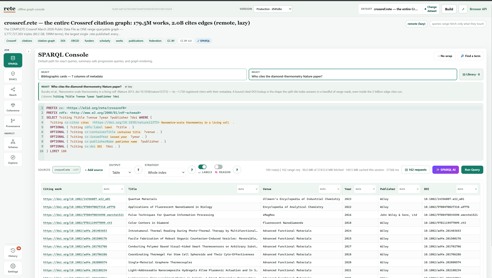
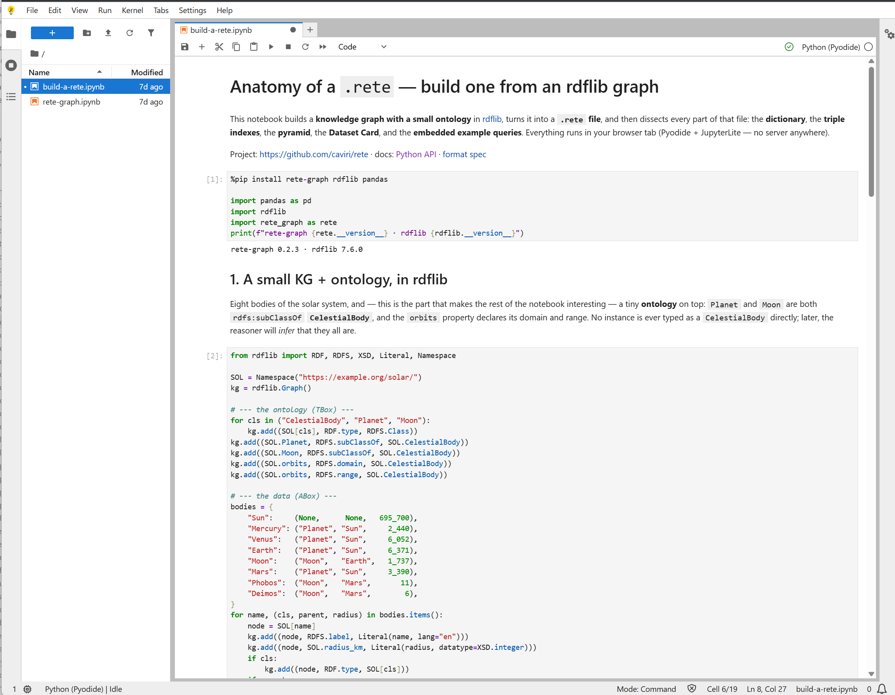

ISWC 2026 · Posters & Demos · Bari, Italy
.rete — serverless SPARQL over
range-addressable RDF snapshots
Three knowledge graphs — up to 60 GB and 3.8 billion triples —
published as plain files on static hosting, with no server behind
them. Query them here, three ways, and watch what each answer
physically cost.

aIn the browser
A static page with the engine compiled to WebAssembly. Open a graph
you did not build, read its card, run a summary-safe query that never
touches the index, then a selective one — and watch the run strip
report the requests issued, the bytes moved, the permutation chosen
and the exact byte ranges read.

bIn a notebook
The same URLs, from Python — no kernel, no server, no local install.
Pyodide runs in the page and rete-graph installs from
PyPI; results land in pandas, and stats() keeps counting
the bytes and range requests each step actually spent.

cFrom an agent
A packaged MCP extension puts the same engine inside an
MCP-capable assistant: nine tools over these files, among them the
card, the schema and SPARQL. It reads the card to learn the
vocabulary before querying — which is what stops a model inventing
predicate names.
0 servers
3 graphs
4.0 B triples
62 GB published
49 KB to open the 2.09 GB one
Carlos Vivar Ríos ·
0000-0002-8076-2034 ·
Swiss Data Science Center & EPFL, Lausanne ·
read the paper (PDF)
How one file answers a query
Publishing an RDF graph for interactive use normally means running a SPARQL
endpoint or shipping the whole dataset to whoever asks. These three take a
third route: the graph, its dictionary, its six permutation indexes and its
own description are packed into one immutable file whose sections
are addressed by byte range. A .rete opens with a 1 KB
header holding a typed section directory — the offset and length of
everything else — so nothing later in the file is ever found by scanning and
every read is a bounded HTTP Range request.
The three graphs
All three are plain objects on Cloudflare R2 behind a CDN — 206 Partial
Content, CORS, no token, no redirect. The same URLs feed all three stations.
| Graph | Triples | File |
Licence | Source |
crossref
The complete Crossref March 2026 citation graph: 179.5M registered works and 2.0B cites edges — the largest single .rete published. |
3,777,727,303 | 60.2 GB |
CC BY 4.0 |
Public Data File |
| zenodo-records
Every published Zenodo record (7.76M) as a DataCite scholarly graph, with ORCID creators and version chains. |
215,396,999 | 2.09 GB |
CC-BY-4.0 |
Zenodo exporter |
| open-pulse
The EPFL/SDSC research-software graph — repositories, people, labs and their ROR institutions. A third-party graph, not ours. |
3,697,829 | 49 MB |
GitHub metadata · ontology © SDSC-ORDES |
Open Pulse |
They share canonical IRIs — a work is https://doi.org/…, a
person is https://orcid.org/… — so Crossref and Zenodo join on
DOIs and ORCIDs without any owl:sameAs reconciliation.
What it costs
Measured on 2026-07-24 against the public files, over a residential link,
end to end — process start and TLS included. Reproducible with the shipped
rete card-url, sparql-url, why-url
and cost commands.
Interaction on zenodo-records.rete |
Requests | Bytes read |
% of file | Index read | Time |
| Dataset card | 3 | 49,452 | 0.002% | no | 0.7 s |
| Predicate histogram, exact | 3 | 49,452 | 0.002% | no | 0.7 s |
| Selective pattern, 19 triples | 41 | 7,602,176 | 0.36% | partial | 5.7 s |
| Join: version chain → title | 30 | 17,825,792 | 0.85% | partial | 4.3 s |
| Join: ORCID author → works | 50 | 18,743,296 | 0.89% | partial | 7.3 s |
| Join: cited-by, empty result | 24 | 4,980,736 | 0.24% | partial | 3.4 s |
The card's 36 per-predicate counts sum to exactly 215,396,999 — the
histogram is exact, not sampled. And the entry cost barely grows with the
graph: the same three requests return 2.6–2.8 KB on the 17.5 GB ORCID and
35.9 GB OpenCitations files.
Where the model stops paying off. Bounded, kilobyte-scale access is
guaranteed for summary-safe questions and typical for selectively routed
ones. An unselective aggregate over a whole graph must read the index and
will move a large fraction of the file — the demonstration lets you
trigger that too, and watch it happen.
Snapshots are also immutable: updates mean a rebuild. This is a
publication format, not a transactional one.
The paper
.rete: Serverless SPARQL over Range-Addressable RDF Snapshots.
ISWC 2026 Posters & Demonstrations Track, Bari, Italy, 25–29 October 2026.
Read the paper (PDF)
Source code (Apache-2.0)
Full project site
This site is a frozen snapshot built for the demonstration: three
graphs, one console, one notebook, one extension. The live project — 80+
published graphs, the CLI, and clients for JavaScript, Python, R, Java and
Blender — continues at
caviri.github.io/rete.